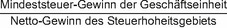

(1) Auf Antrag der berichtspflichtigen Geschäftseinheit kann bei Geschäftseinheiten, die einem zulässigen Ausschüttungssteuersystem unterliegen, die nach Absatz 2 ermittelte fiktive Ausschüttungssteuer zu den angepassten erfassten Steuern der Geschäftseinheiten für ein Geschäftsjahr hinzuzugerechnet werden. Für das Wahlrecht gilt § 77 Absatz 1; es ist einheitlich für alle in dem Steuerhoheitsgebiet belegenen Geschäftseinheiten auszuüben.
(2) Die fiktive Ausschüttungssteuer entspricht dem niedrigeren der folgenden Beträge:
- 1.
Betrag an angepassten erfassten Steuern, der notwendig ist, um den nach § 53 Absatz 1 Satz 2 berechneten effektiven Steuersatz für das Steuerhoheitsgebiet für das Geschäftsjahr auf den Mindeststeuersatz anzuheben;
- 2.
Betrag an Steuern, der fällig gewesen wäre, wenn die in dem Steuerhoheitsgebiet belegenen Geschäftseinheiten ihren gesamten Gewinn, der einem berücksichtigungsfähigen Ausschüttungssteuersystem unterliegt, in diesem Geschäftsjahr ausgeschüttet hätten.
(3) Für jedes Geschäftsjahr, für das das Wahlrecht nach Absatz 1 ausgeübt wird, ist ein jährliches Nachversteuerungskonto für fiktive Ausschüttungen zu bilden. Es wird um die fiktive Ausschüttungssteuer erhöht, die nach Absatz 2 für das Steuerhoheitsgebiet für das Geschäftsjahr gebildet wurde. Am Ende jedes Geschäftsjahres werden die offenen Salden der für frühere Geschäftsjahre gebildeten Nachversteuerungskonten für fiktive Ausschüttungen in chronologischer Reihenfolge jeweils bis zu ihrem vollen Betrag der Reihe nach um die folgenden Posten bis null gemindert:
- 1.
die Steuern, die von den Geschäftseinheiten während des Geschäftsjahres in Bezug auf tatsächliche oder fiktive Ausschüttungen entrichtet wurden,
- 2.
den Betrag eines etwaigen Mindeststeuer-Gesamtverlusts des Steuerhoheitsgebiets multipliziert mit dem Mindeststeuersatz und
- 3.
jeden etwaigen im laufenden Geschäftsjahr nach Absatz 4 geltend gemachten Nachversteuerungskonto-Verlustvortrag.
(4) Ein Nachversteuerungskonto-Verlustvortrag wird für das Steuerhoheitsgebiet gebildet, wenn der in Absatz 3 Satz 3 Nummer 2 beschriebene Betrag den offenen Saldo der Nachversteuerungskonten für fiktive Ausschüttungen übersteigt. Der Nachversteuerungskonto-Verlustvortrag entspricht der Höhe dieses übersteigenden Betrags und wird in den folgenden Geschäftsjahren als Minderung der Nachversteuerungskonten für fiktive Ausschüttungen dieser Geschäftsjahre berücksichtigt. Wird ein solcher Betrag in einem folgenden Geschäftsjahr berücksichtigt, so muss der Nachversteuerungskonto-Verlustvortrag um diesen Betrag gemindert werden.
(5) Für am letzten Tag des vierten Geschäftsjahres nach dem Geschäftsjahr der Bildung offene Salden auf Nachversteuerungskonten werden der effektive Steuersatz und der Steuererhöhungsbetrag für dieses Geschäftsjahr nach § 57 neu berechnet, indem diese Salden als Minderung der zuvor für dieses Jahr bestimmten angepassten erfassten Steuern behandelt werden.
(6) Steuern, die während des Geschäftsjahres im Zusammenhang mit tatsächlichen oder fiktiven Ausschüttungen entrichtet werden, werden bei den angepassten erfassten Steuern nicht berücksichtigt, soweit sie ein Nachversteuerungskonto nach Absatz 3 mindern.
(7) In dem Geschäftsjahr, in dem eine Geschäftseinheit die Unternehmensgruppe verlässt oder im Wesentlichen alle ihre Vermögenswerte überträgt,
- 1.
werden der effektive Steuersatz und der Steuererhöhungsbetrag für jedes vorangegangene Jahr, für das ein Nachversteuerungskonto nach Absatz 3 für fiktive Ausschüttungen einen offenen Saldo aufweist, gemäß § 57 neu berechnet, indem der Saldo des Nachversteuerungskontos als Minderung der zuvor für dieses Jahr ermittelten angepassten erfassten Steuern behandelt wird, und
- 2.
wird jeder zusätzliche Steuererhöhungsbetrag, der sich aus einer solchen Neuberechnung ergibt, mit der Nachversteuerungsquote im Veräußerungsfall multipliziert, um den zusätzlichen Steuererhöhungsbetrag im laufenden Jahr für die Zwecke von § 54 zu ermitteln.
(8) Die Nachversteuerungsquote im Veräußerungsfall wird für jede aus der Unternehmensgruppe ausscheidende Geschäftseinheit anhand der folgenden Formel ermittelt:

Der Mindeststeuer-Gewinn der Geschäftseinheit ist die Summe der Mindeststeuer-Gewinne der ausscheidenden Geschäftseinheit für jedes der Geschäftsjahre auf die sich die Nachversteuerungskonten für das Steuerhoheitsgebiet beziehen. Der Netto-Gewinn des Steuerhoheitsgebiets ist die Summe der nach § 53 ermittelten Mindeststeuer-Gesamtgewinne des Steuerhoheitsgebiets für jedes der Geschäftsjahre, auf die sich die Nachversteuerungskonten für das Steuerhoheitsgebiet beziehen.